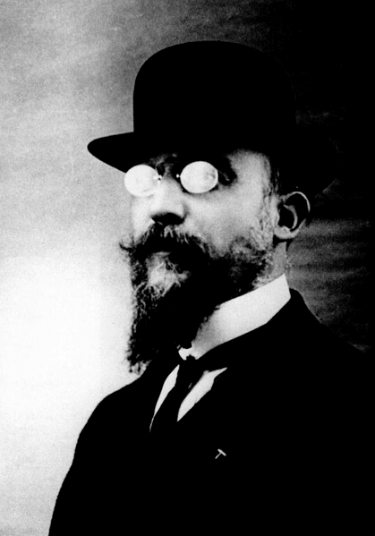

Erik Satie. Fue un compositor y pianista francés. La excentricidad, la irreverencia y una actitud dadaísta
son los ingredientes que configuran la vida y la música de Satie. Precursor del minimalismo, el serialismo y
el impresionismo, es considerado una de las figuras más influyentes en la historia de la música.
{kind=link}
Infancia y juventud.
Nació en Honfleur en 1866, cuando tenía cuatro años, su familia se mudó a París, donde a su padre Alfred se le ofreció un trabajo de traductor. Tras la muerte de su madre, Jane Leslie Anton, en 1872, fue enviado, junto con su hermano menor Conrad, de regreso a Honfleur, para vivir con sus abuelos paternos. Ahí recibió sus primeras lecciones de música de un organista local. Cuando su abuela murió en 1878, los dos hermanos se reunieron en París con su padre.Habiendo demostrado unas especiales aptitudes para la música, en 1879 entró en el Conservatorio de París donde pronto sus maestros le etiquetaron como falto de talento. Tras ser enviado a su casa, dos años y medio más tarde volvió a ser aceptado en el conservatorio, al final de 1885, pero no logró causar mejor impresión a sus maestros, así que finalmente resolvió partir al servicio militar un año después. Esto no duró mucho; en unas pocas semanas salió del ejército mediante un ardid.
Vida amorosa.
Satie y Suzanne Valadon, pintora impresionista y madre de Maurice Utrillo, comenzaron un idilio en 1893. Pronto Valadon se mudó a una habitación cercana a la de Satie en la Rue Cortot. Satie se obsesionó con ella, llamándola «mi Biquí», y escribiendo notas apasionadas acerca de «su ser completo, ojos encantadores, gentiles manos y pequeños pies». Ella pintó el retrato de Satie y se lo dio, pero seis meses después ella se mudó. Durante su relación Satie compuso sus Danses Gothiques, a modo de oración para hacer regresar la paz a su mente. Aparentemente, ésta fue la única relación con una mujer que Satie tuvo en toda su vida.Sus incios en la música.
En 1887, dejó su casa para alojarse en Montmartre. En ese tiempo comenzó lo que sería una amistad de toda la vida con el poeta romántico Patrice Contamine y a través de su padre publicó sus primeras composiciones. Pronto se integró con la clientela artística del café-cabaret Le Chat Noir, y comenzó a publicar sus Gimnopedias. Siguieron las Ogives, las Gnossiennes, etc. En el mismo período conoció a Claude Debussy.En 1891 se convirtió en el compositor oficial y maestro de capilla de la orden rosacruz liderada por Joséphin Péladan, la Ordre de la Rose-Croix Catholique, du Temple et du Graal. Compuso para ella piezas de inspiración mística, como Salut Drapeau!, Le Fils des étoiles, y Sonneries de la Rose Croix. Composiciones de cabaret
Desde 1899 en adelante se ganó la vida como pianista de cabaret, adaptando más de un centenar de piezas populares para piano (o piano y voz), añadiendo algunas propias. Las más conocidas son Je te veux, Tendrement, Poudre d'or (un vals), La Diva de l'Empire, Le Picadilly (marcha, también conocida como La Transatlantique), Légende Californienne y muchas más. En sus últimos años Satie rechazaría toda su música de cabaret como perversa y contraria a su naturaleza, aunque revivió parte de su tono jocoso en La Belle Excentrique, de 1920. Pero en su momento le sirvió para ganar dinero.
Éxitos.
En el año 1912 vio el éxito de sus breves piezas humorísticas para piano; durante los años siguientes escribiría y publicaría muchas de ellas (la mayoría estrenadas por el pianista Ricardo Viñes):- Véritables Préludes flasques(pour un chien) (verdaderos preludios blandos (para un perro))
- Vieux sequins et vieilles cuirasses (oro viejo y viejas corazas)
- Embryons desséchés (Embriones disecados)
- Descriptions Automatiques (descripciones automáticas)
- Sonatine bureaucratique (Sonatina burocrática)
 Su costumbre de acompañar las partituras de sus composiciones con comentarios de todo tipo queda ahora bien
establecida (hasta el punto de tener que insistir años más tarde en que estos comentarios no hay que leerlos
durante la interpretación). En esta época deja de usar líneas divisorias para separar los compases.
Su costumbre de acompañar las partituras de sus composiciones con comentarios de todo tipo queda ahora bien
establecida (hasta el punto de tener que insistir años más tarde en que estos comentarios no hay que leerlos
durante la interpretación). En esta época deja de usar líneas divisorias para separar los compases.
Pero la verdadera aceleración en la vida de Satie no vino del éxito creciente de sus obras para piano; de hecho fue Ravel quien, probablemente sin saberlo, activó lo que habría de convertirse en una característica del Satie posterior: ser parte de todos las corrientes vanguardistas que se desarrollaron en París en los años siguientes. Estas corrientes se sucedieron rápidamente unas a otras, convirtiendo sin duda a París en la capital artística de la época, cuando el comienzo del nuevo siglo pareció entusiasmar a tantos.
Con Jean Cocteau, al que conoció en 1915, comenzó a trabajar en la música incidental para una puesta en escena de la obra de Shakespeare, El sueño de una noche de verano. Desde 1916 Satie y Cocteau trabajaron en el ballet Parade, que estrenaron en 1917 los Ballets Rusos de Sergei Diaghilev, con decorados y vestuarios de Pablo Picasso y coreografía de Leonide Massine. A través de Picasso, Satie conoció a otros cubistas, como Georges Braque, con el que trabajó en otros proyectos inacabados.
Muerte y postmuerte.
En 1925 muere en París. Después de su entierro en el cementerio de Arcueil sus amigos descubrieron en su habitación numerosos objetos como:- Una colección de unos cien paraguas, algunos aparentemente jamás usados.
- El retrato que le hizo su amiga Suzanne Valadon en 1893.
- Cartas de amor y dibujos de la época de Valadon.
- Otras cartas de todos los períodos de su vida.
- Su colección de dibujos de edificios medievales (desde entonces sus amigos empezaron a ver *la relación entre Satie y ciertos anuncios de periódico anónimos acerca de «castillos de plomo» y cosas parecidas).
- Otros dibujos y textos de valor autobiográfico.